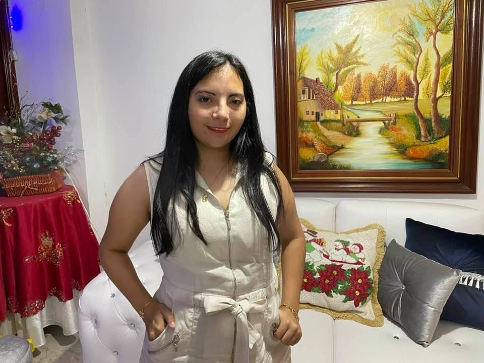
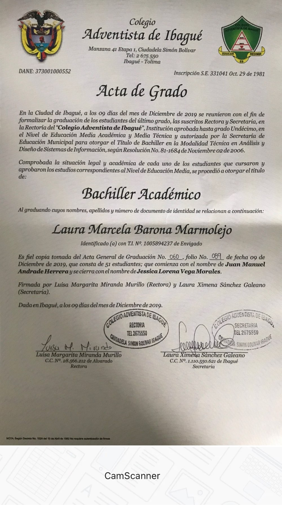

Bienvenido a Mi Portafolio
Este es mi portafolio donde podras ver mis proyectos y experiencia
Sobre Mí
Soy Laura Barona. Actualmente estoy estudiando ingeniería informática en la Universidad Internacional de La Rioja, por lo cual me estoy preparando para ser una gran ingeniera y poder montar junto con mi familia una empresa .
Proyectos
Proyecto
Uno de los proyectos que hice en la universidad fue de Java.
Experiencia
Una de mis experiencias fue vendiendo carnes frías con Zenu durante la temporada del segundo semestre del año, también trabajé como secretaria en la UNAD como horas sociales para poder graduarme del colegio.
Educación
Termine mi educación en el colegio adventista de ibagué y con ganas de obtener certificaciones para poder aprender mucho sobre tecnologia
Blog
por ahora esta va hacer mi primera publicación.